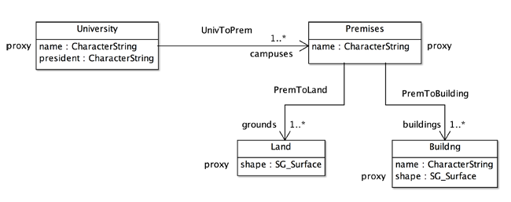
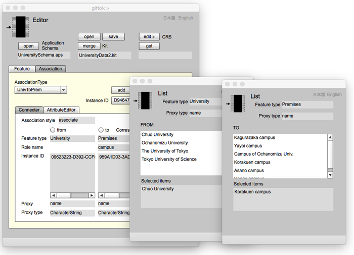
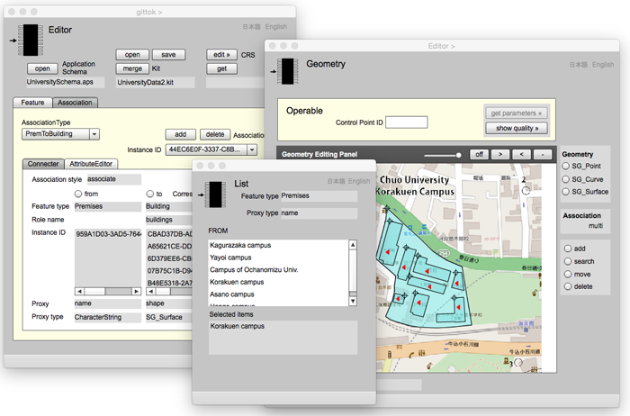

List
List is a page to show a list of proxy attributes included n feature instances. List is used if a type of proxy attribute is character string. There are features which do not have geometric attributes. For example, do universities have their own shapes? The answer is no. Actually campus and buildings belonging in the university have shapes. However university is not a physical feature and its existence is confirmed by consensus not by its physical structure. There are many similar features such as private company and public organization.
In gittok, feature that has no geometric attributes may associate with other feature by using List page (A text in Editor page should be referred). This text explains about acquisition of association instance using List page at first, then filed and buttons in List page is explained.
Association between university and campuses
Most of university has more than one campus. Each premises of a campus includes grounds and buildings. Ground and building have geometric attributes, but university and campus do not have their own geometric attributes. However in gittok, university and campus can be thought as features because they are abstraction of real world phenomena. Such university and campus can be resented as an application schema shown in Figure 1.

Figure 1. Application schema representing university and campuses
Feature is defined as abstraction in the real world phenomena in ISO 19101:2002 - Reference model. Abstraction is selection and simplification of attributes. For example in Figure 1, University is abstracted to its name and president and association to premises of which role is campuses. Premises is abstracted by its name and associations to lands as grounds and buildings. Land is abstracted by its shape. Building is abstracted by its name and shape.
Acquisition of spatial data in accordance with this application schema is shown bellow.
1. Instances of universities are created in Editor page.
2. Instance of premises are created in Editor page.
3. Instances representing association between university and its campuses are created by FROM and TO List pages. The result is shown in Figure 2.
4. Instances of lands with shapes are digitized in Geometry page and created in Editor page.
5. Instance representing association between premises and land are created by FROM List page and Geometry page. The result is shown in Figure 3.
6. Instances of buildings with shapes are digitized in Geometry page and created in Editor page.
7. Instance representing association between premises and builsinds are created by FROM List page and Geometry page. The result is shown in Figure 4.

Figure 2. Association between Chuo university and Korakuen campus
An id of Chuo university appears in a box of Instance ID at "from" side in Editor page by selecting Chuo university at the List page of university. Then an id of Korakuen campus appears in a box of Instance ID at "to" side in Editor page by selecting Korakuen campus at the List page of premises. Next, FROM and TO List pages appear by clicking "show" button in Editor page. Selected items in FROM list indicate "Chuo university" is a from-feature. Simultaneously, selected items in TO list indicates "Korakuen campus" is a to-feature.
Figure 3. Association between Korakuen campus and the ground
An id of Korakuen campus appears in a box of Instance ID at "from" side in Editor page by selecting korakuen campus at the List page of premises. Then an id of the ground appears in a box of Instance ID at "to" side in Editor page by selecting the land at the Geometry page. Next, FROM List page appears by clicking "show" button in Editor page. Selected items in FROM list indicate "Korakuen campus" is a from-feature. Simultaneously, a red triangle in Geometry page indicates a ground of Koraen campus.

Figure 4. Assciation between Korakuen campus and buildings
An id of Korakuen campus appears in a box of Instance ID at "from" side in Editor page by selecting korakuen campus at the List page of premises. Then ids of buildings appear in a box of Instance ID at "to" side in Editor page by selecting buildings at the Geometry page. Next, FROM List page appears by clicking "show" button in Editor page. Selected items in FROM list indicate "Korakuen campus" is a from-feature. Simultaneously, red triangles in Geometry page indicate buildings of Koraen campus.
List

Figure 5. Lists of FROM and TO features
Fields
Feature type
Type name of selected feature as FROM or TO feature of association.
Proxy type
Type name of proxy attribute in selected feature.
FROM or TO (selectable)
FROM (or TO) is shown if this list is for from (or to) features. The box under the label is to show a list of proxy attributes. Instance ID of the selected feature appears in Instance ID box at Editor page by clicking a proxy in this list.
Selected items
Proxy attributes of selected features are listed in this box by clicking show button in Editor page.
日本語
今あなたが読んでいるドキュメントが表示されます．
English
You can read the tutorial written in English.